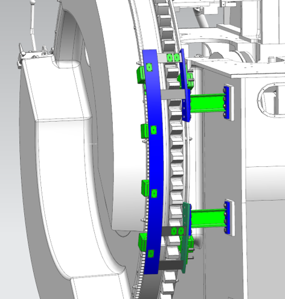

Trigger sensors are detection by continuesly turning by turning gear or engine running. mean, can't check sensor's work by touching

Trig Ring
Mark Rings
Q1A
Q2A
Q1B
Q2B
MMA
MMB
What is Encoder? Encoder main function is reading angle of Crank shaft for define control timing
How many signals are in a Encoder? basically, 4 signals in a Encoder Mark 1(Reading 180degree) Makr 2(Reading 180Degree)
Quadrature 1(Reading 360 pulse in 1 revolution)
Quadrature 2(Reading 360 pulse in 1 revolution. 0.5degree different angle from Quadrature 1)
How to adjust gap and position?
For Q1A
Turn the engine to TDC1.
Making touch the Adjusting tool bottom on trig ring each teethes by Adjusting bolt
Check that the diode of the Q1A-sensor points directly towards the trigger ring tangent line in the opposite
direction of engine's main running direction. if this is not the case,
then loosen the sensor nouts and turn the sensor about its symmetrical axis to obtain the above diode position.
Please note that th Q-signals are extremely sensitive to the sensor's rotational position.
Repeat the above for the remaining Q-sensors.
Loosen the screws holding the mountin plate for the Q1A pickup box to the main tacho bracket.
Position the Q1 sensor box with mounting plate the gap evenly on both sides of the sensor.
The adjustment tool will ensure a radial distance of 1 mm for from the tip of the trigger ring teeth to the sensor head.
Add a feeler gauge of 0.5mm between the sensor head and the adjustment tool so the final distance is 1.5 mm between the sensor and the trigger ring.
Tighten the screws firmly to secure the mounting plate with pick-up box in a locked position.
Remove the tool.
Loosen the screws holding the mounting plate for the Q2A pick-up box to the main tacho bracket.
Position the Q2A sensor box with mounting plate in the Q2 slot on adjustment tool.
The slot is slightly wider than the sensor head diameter, so distribue the gap envenly on both sides of the sensor.
Add a feeler gauge of 0.5 mm between the sensor head and the adjustment tool so the final distance is 1.5 mm between the sensor and the trigger ring.
Tighten the screws firmly to secure the mounting plate with pick-up box in a lock position.